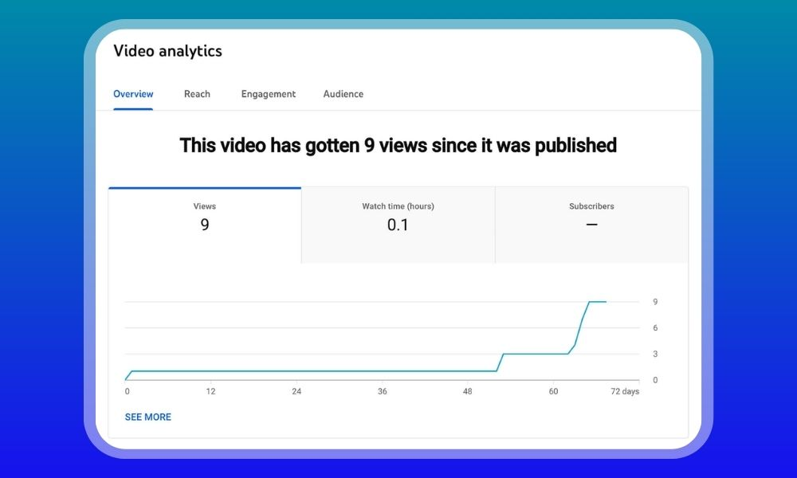

01
Two Years of Trying Things That Didn't Work
I'm from Fresno, California. At 22 I decided I didn't want a regular job, so I started trying online business models. First was affiliate marketing — I built a blog, wrote for months, and got almost no traffic. Then dropshipping, which cost me $400 and returned one sale in three months.
Then YouTube. I launched three faceless channels between 2022 and 2024. The first one got 80 subscribers before I gave up on it. The second got a little further. The third hit 200 and flatlined. I kept making videos nobody watched, with no real idea why they weren't working.
By late 2024 I had spent two years and had very little to show for it. I came close to stopping completely.

